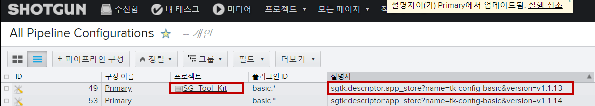

구성 버전 관리
Great. So we locked down shotgun desktop to a reasonable degree and if it's not yet obvious we've also locked down the versions of all the shotgun related tools for all new and existing shotgun projects in all our artists DCC's. 좋습니다. 그래서 우리는 샷건 데스크탑 버전을 고정시켰습니다. 그리고 아직 확실하지 않다면, 모든 DCC에 있는 모든 신, 기존 샷건 프로젝트에 사용되는 샷건 관련 도구들의 버전도 차단했습니다.
어떤 프로젝트든 탐색하면 매번 동일한 도구 세트를 얻을 수 있습니다.
도구 세트가 이제 글로벌 버전 사이트 기본 구성으로 제어되므로 놀라운 자동 업데이트가 없습니다.
그러나 특정 프로젝트를 다른 버전의 기본 구성으로 잠그려면 어떻게 해야 합니까?
If a project is headed into a particularly delicate period of production, 만약 프로젝트가 특히나 민감한 생산 기간으로 향하고 있다면
The VFX soup may want his or her artists tools to be temporarily insulated from changes to the global site config setting that up is super easy just copy the primary config link it to the project in question specify the config to use and that's it. VFX 수프는 자신의 아티스트 도구가 글로벌 사이트 구성 설정의 변경으로부터 일시적으로 격리되기를 원할 수 있습니다. 이 설정은 해당 프로젝트에 복사하기만 하면 됩니다. 이 링크는 사용할 구성을 지정하는 것입니다.
Shotgun desktop will prefer and load capital P primary configs with a project link over the primary site config. Shotgun 데스크톱은 기본 사이트 구성보다 프로젝트 링크가 포함된 자본 P 기본 구성을 우선 로드합니다.
Here's another scenario. 여기 또 다른 시나리오가 있습니다.

When a projects archived apulian field is set you could set up an event daemon trigger that creates a new primary config for the project unless one eye already exists based on the current primary site config. 프로젝트 아카이브 부울 필드가 설정된 경우 현재 주 사이트 구성을 기반으로 한 눈이 이미 존재하지 않는 한 프로젝트의 새 기본 구성을 생성하는 이벤트 데몬 트리거를 설정할 수 있습니다.
That way if an artist needs to access something in the project two or three years later they'd have the exact same tool set they had when the project wrapped. 그렇게 해서 예술가가 2, 3년 후에 프로젝트의 어떤 것에 접근해야 한다면, 그들은 프로젝트가 마무리 되었을 때 가지고 있던 것과 똑같은 도구를 갖게 될 것입니다.
You've essentially preserved a full pipeline known to be compatible with whatever workflows and files were in play for this project when it was active. 이 프로젝트가 활성화되었을 때 이 프로젝트에서 실행 중이던 워크플로우 및 파일과 호환되는 것으로 알려진 전체 파이프라인을 보존했습니다.
Finally you could even do something crazy like set up a project to use a config without a version number so only that one project pulled all the latest updates from the AppStore if one project is run by a leeding-edge kind of soup. 마지막으로, 버전 번호가 없는 구성을 사용하도록 프로젝트를 설정하는 것과 같은 미친 일도 할 수 있습니다. 따라서 하나의 프로젝트가 리딩에 의해 실행되는 경우 AppStore에서 최신 업데이트를 모두 가져올 수 있습니다.
Hopefully you're starting to realize how flexible this approach to config management is and how many options you have the next step of course is to take control of config itself and make changes to some of the artists tools instead of just playing around with version numbers and software entities. 구성 관리에 대한 이 접근 방식이 얼마나 유연한지, 그리고 다음 단계의 몇 가지 옵션이 있다면 버전 번호와 소프트웨어만 사용하는 대신 구성 자체를 제어하고 일부 아티스트 도구를 변경하는 것입니다.
But it does get a little more complicated from here on out so if you have everything you need feel free to stop the video so far we've been using. 하지만 이제부터는 좀 더 복잡해지니까, 지금까지 사용해오던 비디오를 마음껏 중단해 보세요.